The feel
Everything follows one long, sinuous, organic line,1 shaped like flower stalks and buds, vine tendrils and insect wings, sometimes graceful and sometimes with a rhythmic, whiplike force.1 In Gismonda, Mucha's first poster for Sarah Bernhardt, a single figure stands still, near life-size, on a long, narrow sheet in subtle pastels. To Paris in 1895 it looked dignified and sober, and startlingly new.2
In Lies of P and Expedition 33 the period dresses cities that were once beautiful and now lie in ruins.3,4 Round8 chose the Belle Époque for Lies of P as "the right mix of beauty and prosperity", then made it darker and gloomier.5 Sandfall's Guillaume Broche saw the period as "not explored that much in games".4 For Transistor, Supergiant twisted cyberpunk into a romanticised city, drawing on the elongated natural patterns and gold of Klimt and Mucha.6
- sinuous
- botanical
- serene
- pastel
- ornate
- fin de siècle
Where it comes from
Art Nouveau flourished from about 1890 to 1910 across Europe and the United States, as a deliberate break from imitating the styles of the past.1 It grew out of the Arts and Crafts and Aesthetic movements and drew on Japanese art, and Siegfried Bing's Paris gallery L'Art Nouveau, opened in December 1895, is credited with popularising the movement and its name.7 Paris met it on the street: Mucha's Gismonda posters went up on the morning of 1 January 1895,2 the French called it Le Style Métro after Hector Guimard's iron and glass entrances to the underground, and the 1900 Exposition Universelle won over the public at large.7 After 1910 it looked old-fashioned, until the 1960s revived its flowery lines as a psychedelic style on rock and pop album covers.1
Core elements
Whiplash line
The defining feature is an undulating, asymmetrical line in the form of flower stalks and buds, vine tendrils and insect wings.1 Its whiplash curves drew partly on botanical studies and on drawings of deep-sea organisms, such as those Ernst Haeckel published in Art Forms in Nature (1899).7 In a poster or an illustration, the line rules over form, texture, space and colour.1
Tall, narrow format
Gismonda set Sarah Bernhardt life-size on an arched platform,8 in a long, narrow shape whose novelty startled Paris.2 Mucha kept the elongated format for six more Bernhardt posters, each with one full-standing figure in a raised shallow alcove like a saint.2
Halo disk behind the figure
From the Gismonda prototype Mucha built his advertising style: a single figure, or a woman's head, against a halo-like disk arranged with flowers and other decorative motifs.9 Around it he set border decoration inspired by mosaic work, a Byzantine effect also seen in Gismonda, which gives a commercial poster an air of dignity.10
Abundant, stylised hair
Job (1896) fixed the image of the "Mucha woman" with swirls of exaggeratedly abundant hair, and the smoke from her cigarette rises in an arabesque that twines through her hair and the company logo.10 His "macaroni" hair became one of the most copied design tropes of the early 20th century, and he shaped it to the product: wild tresses for champagne, barley and hops for a beer region.11
Subtle pastel colour
Gismonda's subtle pastel colours were part of what made it new.2 It is printed in lavender, salmon, cobalt blue, light blue and olive,12 and the printer disliked it at first, because posters were expected to use bold colours and simple, vibrant images.11
Ornament fused with structure
In buildings the whole form is swept into the organic line: columns and beams become thick vines with spreading tendrils, and windows become membranous outgrowths.1 Ironwork, glass, ceramic and brick are combined freely,1 as in Hector Guimard's iron and glass entrances to the Paris Métro.7
How to do it
Set up a tall, narrow sheet
Make the sheet about 2.9 times as tall as it is wide: Gismonda measures 216 by 74.2 cm,8 and was printed on two sheets of paper.12 Fill its height with one standing figure, the plan Mucha reused for all seven of his Bernhardt posters.2
Draw the plant from life
Draw each plant from nature with strict accuracy, then make its ornamental version: every motif in the 1896 pattern book Grasset directed is backed by such a study, so the two can be compared.13 His rule is that natural forms can only be used once they are reshaped to fit the material they will be made in.13 Look at sea life too: the whiplash curve drew partly on drawings of deep-sea organisms such as Haeckel's.7
Ink a strong outline
Draw every shape with a firm, curving contour before any colour goes in. Mucha's archetypal poster style rests on curved lines, light tones, flattened colours and strong outlines.14 For black and white, study Aubrey Beardsley's Salomé print of 1894, which the Met singles out for its brilliant use of Japanese two-dimensional composition.7
Letter the title by hand
Draw the lettering as part of the composition, in the same hand as the figure.11 Mucha revived a 4th-century uncial hand, with a curled d, rounded e, small h and rounded m and n, and drew the letters more sinuous and organic than the originals.11
Make a key drawing
Use the outline drawing as the key for every colour. In colour lithography a drawing in black outline was filled in with colours printed from separate stones.15 As the lithographer Louis Prang described it in 1897, prints of the key were transferred to as many stones as the picture needed, and small crosses at each side of the sheet kept the colours from printing out of register.15
Print the colours from light to dark
Give each colour its own layer: in lithography each colour needed its own drawn stone, and the sheet went through the press again for each one.16 Gismonda uses five: lavender, salmon, cobalt blue, light blue and olive.12 Lay them from the lightest to the darkest, the order Jules Chéret's stones followed,17 and keep every layer in register, as Mucha's complex designs needed their colour plates to align perfectly.11
Build a period street
Shape lamp posts, railings and entrances as iron plants: Hector Guimard's Paris Métro entrances of 1898 to 1901 are cast iron in plantlike forms.18 Then match the colour temperature of the lights to 19th-century gas lamps, as Round8 did for Lies of P.3
Cheat sheet
Do
- Photograph poses before you draw. Mucha improvised poses in front of the camera and kept an archive of variants to pick from for each new commission.19
- Tie the ornament to the subject. Mucha put barley and hops in the hair of a beer poster, and made lilacs and hydrangeas echo the wheels and tracks of a train.11
- Keep the figure still. In Gismonda the stillness of the near life-size figure gave the poster a dignity and sobriety that startled Paris.2
- Let one curve run between parts of the design. In Job the cigarette smoke forms an arabesque that twines through the woman's hair and the company logo.10
Avoid
- Loud colour and caricature in a Mucha-style poster. Other artists' posters for Job were smaller, brighter and closer to caricature than Mucha's subtle, life-size women.11
- Symmetry, flat planes and unvaried repeats of geometric ornament. Britannica gives these as marks of Art Deco,20 while the Art Nouveau line is undulating and asymmetrical.1 The exception is the mostly geometric line of Charles Rennie Mackintosh in Glasgow, which influenced the Vienna Secession.1
- Copying historical ornament. Art Nouveau set out to be free of imitative historicism,1 and Grasset called for abandoning any copy of the ornaments of another age.13
- Blowing a small illustration up to poster size. "A good poster cannot just be an enlarged illustration," in Alain Weill's words.11
Tools and tutorials
- La Plante et ses applications ornementales
Eugène Grasset directed this 1896 book and made it with a small band of young designers: more than 150 motifs, each backed by a plate drawn from nature.13
- Mucha Foundation: decorative designs
Mucha's decorative designs, from jewellery and packaging to final studies for plates of Documents décoratifs, the book he made so that manufacturers and artists could learn from his style.11
- Poster House: progressive proofs of Libraire Ed. Sagot
A full set of proofs of a Jules Chéret poster, built up one colour stone at a time.16
- Poster House: How to Print
An illustrated guide for students to three ways of printing posters, stone lithography among them, step by step.21
Palette
Sampled from Mucha's prints: sage, copper and the sepia contour from Zodiac, hair gold and plum from Job, ivory paper and cobalt from Gismonda, and dusty rose from The Seasons. Gismonda's own inks are lavender, salmon, cobalt blue, light blue and olive.12
Feel the vibe
In motion
Listen
Play it while you draw ironwork and flower stalls: the voice holds one long line the way a whiplash curve does.
YouTubeA slow, steady pulse for inking long tapering curves without rushing them.
YouTubeWarm and hazy, good company while you lay gold over a dark city.
YouTubeThe melody drifts and curls back on itself; draw tendrils and flowing hair to it.
YouTube
More references
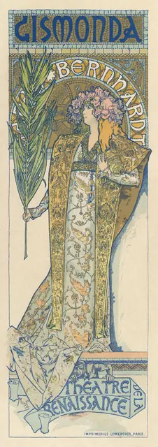
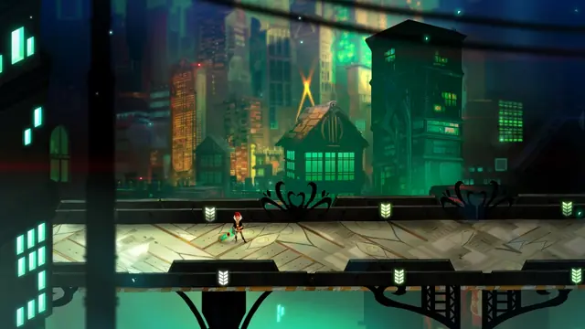
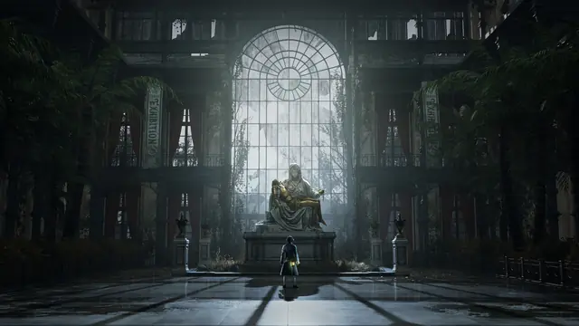
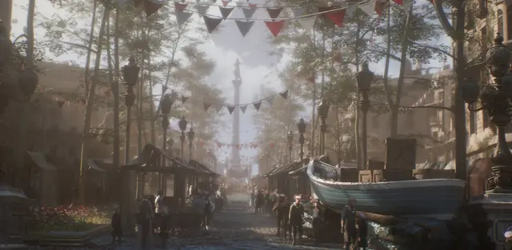
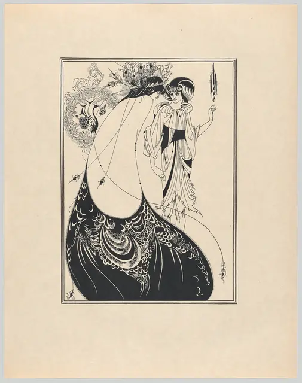
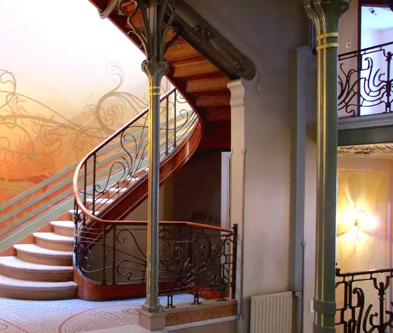
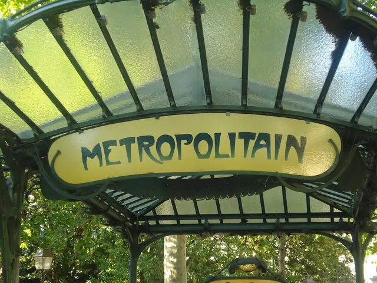
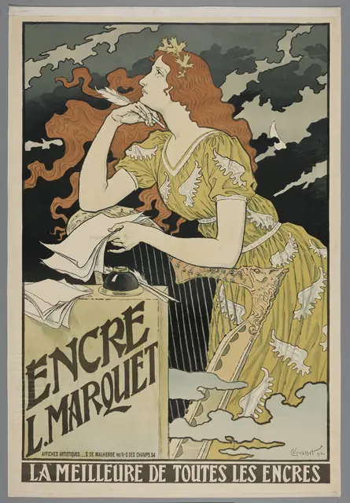
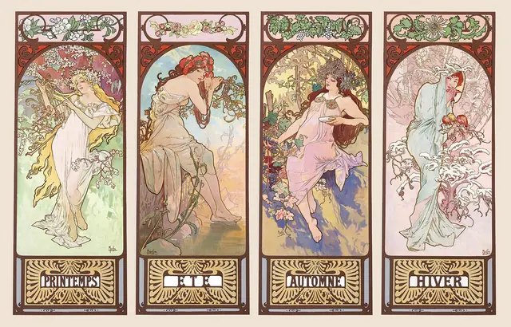
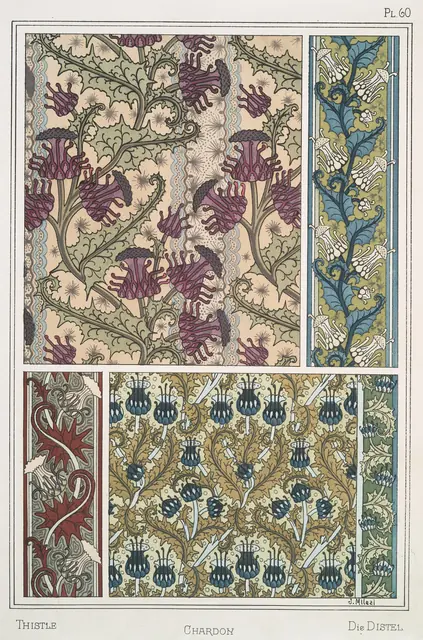
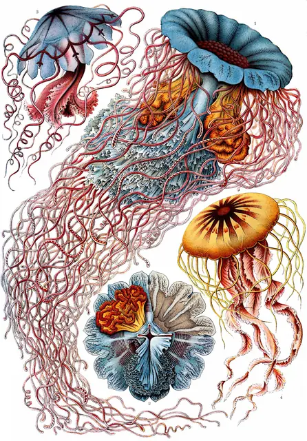
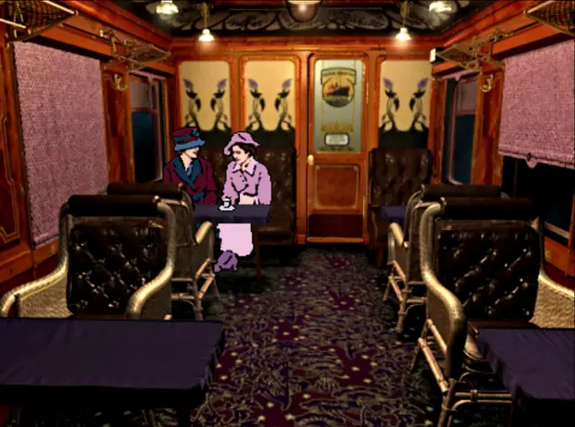
Games
- The Last Express
Its makers chose the period's Art Nouveau style for a rich, detailed world, and turned filmed actors into black and white ink drawings that were recoloured and set into 3D train interiors.22 Study the inked figures against the period rooms.
- Transistor
Jen Zee drew on Klimt and Mucha for a romanticised, quasi-futuristic city of elongated natural patterns and gold.6 Study how the ornament dresses a future city.
- Lies of P
Krat's architecture mixes Neo-Gothic and Art Nouveau,23 under lights tuned to the colour of 19th-century gas lamps.3
- Clair Obscur: Expedition 33
Lumière, its version of Paris, mixes Belle Époque and Art Deco architecture.24 Study Lumière's streets: cast-iron lamp posts, flower stalls and carved stone fronts.
Film, art and more
- Gismonda
Sarah Bernhardt as a Byzantine noblewoman, life-size on an arched platform.8
- Job
The poster that fixed the image of the "Mucha woman".10 In the 1960s Alton Kelley and Stanley Mouse reworked it in neon tones for a Big Brother and the Holding Company concert.11
- The Seasons
Mucha's first decorative panels, posters without text made for walls, so popular that Champenois asked for at least two more sets.25
- Salomé
Bold black and white line with Japanese two-dimensional composition, as in the print the Met singles out, J'ai baisé ta bouche Iokanaan.7
- Paris Métro entrances
The cast-iron entrances, in plantlike forms, that gave the style a French nickname, Le Style Métro.18,7
- Art Forms in Nature
Plates of deep-sea organisms of the kind the whiplash curve drew on.7
Sources
- 1Art Nouveau
- 2Sarah Bernhardt
- 3Lies of P takes inspiration from Pinocchio, French history, and marries them with Soulslike combat
- 4Expedition 33 devs had to "up our game" after Lies of P left studio CEO stunned
- 5Masters of puppets: How ROUND8 Studio carved out a niche for Lies of P
- 6Transistor: Ready To Broadcast
- 7Art Nouveau
- 8Poster for 'Gismonda' (1894)
- 9Advertising Posters
- 10Poster for 'Job' cigarette paper (1896)
- 11Alphonse Mucha: Art Nouveau / Nouvelle Femme (exhibition guide)
- 12La Gismonda (Sarah Bernhardt)
- 13La Plante et ses applications ornementales: introduction
- 14Poster for 'Salon des Cent 20th Exhibition' (1896)
- 15Chromolithography (Louis Prang: Master of Chromolithography)
- 16Libraire Ed. Sagot (progressive proofs)
- 17Family Guide: Poster History Timeline
- 18Hector Guimard
- 19Studio, Models and Staged Photography
- 20Art Deco
- 21How to Print
- 22The Last Express: production
- 23Lies of P: Envisioning Automata in the Belle Epoque
- 24Sandfall Interactive Clair Obscur: Expedition 33 Art Blast
- 25The Seasons (series) (1896)